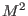
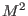
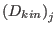
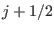
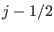

Calculation of the vertical shear
INTERFACE:
subroutine shear(nlev,cnpar)
DESCRIPTION:
The (square of the) shear frequency is defined as
It is an important parameter in almost all turbulence models.
The  - and
- and  -contributions to  are computed using a new scheme
which guarantees conservation of kinetic energy for the conversion
from mean to turbulent kinetic energy, see Burchard (2002a).
The shear is calculated by dividing the energy-consistent
form of the shear production (see equation (14) by Burchard (2002a),
but note the typo in that equation)
by the eddy viscosity. The correct form of the right hand side of
equation (14) of
Burchard (2002a) should be:
-contributions to  are computed using a new scheme
which guarantees conservation of kinetic energy for the conversion
from mean to turbulent kinetic energy, see Burchard (2002a).
The shear is calculated by dividing the energy-consistent
form of the shear production (see equation (14) by Burchard (2002a),
but note the typo in that equation)
by the eddy viscosity. The correct form of the right hand side of
equation (14) of
Burchard (2002a) should be:
with the mean kinetic energy dissipation,
.
The two terms on the right hand side are the contribution
of energy dissipation from below the interface at  and the
contribution from above the interface at .
With (37),
an energy-conserving discretisation of the shear production at should
be
such that a consistent discretisation of the square of the shear in
 -direction should be
-direction should be
The -contribution is computed analogously.
The shear obtained from (39)
plus the -contribution is then used for the computation of the turbulence
shear production, see equation (148).
USES:
use meanflow, only: h,u,v,uo,vo
use meanflow, only: SS,SSU,SSV
IMPLICIT NONE
INPUT PARAMETERS:
number of vertical layers
integer, intent(in) :: nlev
numerical "implicitness" parameter
REALTYPE, intent(in) :: cnpar
REVISION HISTORY:
Original author(s): Lars Umlauf
Karsten Bolding
2012-12-28